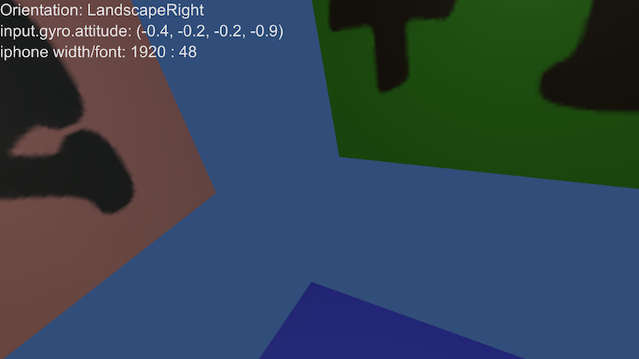

访问陀螺仪的接口。
可以使用该类访问陀螺仪。下面的示例脚本演示了如何使用 Gyroscope 类查看设备在空间中的方向。
Underlying sensors used for data population:
Android: Gravity, Linear Acceleration, Rotation Vector. More information.
iOS: Gyroscope, Device-Motion. More information.
// Create a cube with camera vector names on the faces. // Allow the device to show named faces as it is oriented.
using UnityEngine;
public class ExampleScript : MonoBehaviour { // Faces for 6 sides of the cube private GameObject[] quads = new GameObject[6];
// Textures for each quad, should be +X, +Y etc // with appropriate colors, red, green, blue, etc public Texture[] labels;
void Start() { // make camera solid colour and based at the origin GetComponent<Camera>().backgroundColor = new Color(49.0f / 255.0f, 77.0f / 255.0f, 121.0f / 255.0f); GetComponent<Camera>().transform.position = new Vector3(0, 0, 0); GetComponent<Camera>().clearFlags = CameraClearFlags.SolidColor;
// create the six quads forming the sides of a cube GameObject quad = GameObject.CreatePrimitive(PrimitiveType.Quad);
quads[0] = createQuad(quad, new Vector3(1, 0, 0), new Vector3(0, 90, 0), "plus x", new Color(0.90f, 0.10f, 0.10f, 1), labels[0]); quads[1] = createQuad(quad, new Vector3(0, 1, 0), new Vector3(-90, 0, 0), "plus y", new Color(0.10f, 0.90f, 0.10f, 1), labels[1]); quads[2] = createQuad(quad, new Vector3(0, 0, 1), new Vector3(0, 0, 0), "plus z", new Color(0.10f, 0.10f, 0.90f, 1), labels[2]); quads[3] = createQuad(quad, new Vector3(-1, 0, 0), new Vector3(0, -90, 0), "neg x", new Color(0.90f, 0.50f, 0.50f, 1), labels[3]); quads[4] = createQuad(quad, new Vector3(0, -1, 0), new Vector3(90, 0, 0), "neg y", new Color(0.50f, 0.90f, 0.50f, 1), labels[4]); quads[5] = createQuad(quad, new Vector3(0, 0, -1), new Vector3(0, 180, 0), "neg z", new Color(0.50f, 0.50f, 0.90f, 1), labels[5]);
GameObject.Destroy(quad); }
// make a quad for one side of the cube GameObject createQuad(GameObject quad, Vector3 pos, Vector3 rot, string name, Color col, Texture t) { Quaternion quat = Quaternion.Euler(rot); GameObject GO = Instantiate(quad, pos, quat); GO.name = name; GO.GetComponent<Renderer>().material.color = col; GO.GetComponent<Renderer>().material.mainTexture = t; GO.transform.localScale += new Vector3(0.25f, 0.25f, 0.25f); return GO; }
protected void Update() { GyroModifyCamera(); }
protected void OnGUI() { GUI.skin.label.fontSize = Screen.width / 40;
GUILayout.Label("Orientation: " + Screen.orientation); GUILayout.Label("input.gyro.attitude: " + Input.gyro.attitude); GUILayout.Label("iphone width/font: " + Screen.width + " : " + GUI.skin.label.fontSize); }
/********************************************/
// The Gyroscope is right-handed. Unity is left handed. // Make the necessary change to the camera. void GyroModifyCamera() { transform.rotation = GyroToUnity(Input.gyro.attitude); }
private static Quaternion GyroToUnity(Quaternion q) { return new Quaternion(q.x, q.y, -q.z, -q.w); } }

iOS Screen-shot showing +Z, +Y and -X.
| attitude | 返回设备的姿态（即在空间中的方向）。 |
| enabled | 设置或检索该陀螺仪的启用状态。 |
| gravity | 返回以设备参考系表示的重力加速度矢量。 |
| rotationRate | 返回设备陀螺仪测量的旋转速率。 |
| rotationRateUnbiased | 返回设备陀螺仪测量的无偏差旋转速率。 |
| updateInterval | 设置或检索陀螺仪间隔时间（以秒为单位）。 |
| userAcceleration | 返回用户给予设备的加速度。 |